In this example we consider the flow in a 2D channel that contains a cylinder with a waving "flag". This is a "warm-up problem" for the solution of Turek & Hron's FSI benchmark problem discussed in another tutorial.
The Problem
The figure below shows a sketch of the problem: A 2D channel of height  and length 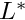 contains a cylinder of diameter
and length 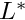 contains a cylinder of diameter  , centred at 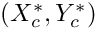 to which a "flag" of thickness 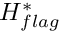 and length
, centred at 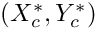 to which a "flag" of thickness 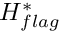 and length  is attached. We assume that the flag performs time-periodic oscillations with period 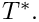 Steady Poiseuille flow with average velocity 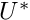 is imposed at the left end of the channel while we assume the outflow to be parallel and axially traction-free.
is attached. We assume that the flag performs time-periodic oscillations with period 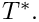 Steady Poiseuille flow with average velocity 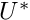 is imposed at the left end of the channel while we assume the outflow to be parallel and axially traction-free.

We non-dimensionalise all length and coordinates on the diameter of the cylinder, , time on the natural timescale of the flow, 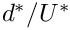, the velocities on the mean velocity, , and the pressure on the viscous scale. The problem is then governed by the non-dimensional Navier-Stokes equations
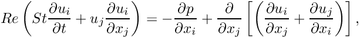
where  and 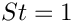, and
and 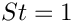, and
![\[ \frac{\partial u_i}{\partial x_i} = 0, \]](form_12.png)
subject to parabolic inflow
![\[ {\bf u} = 6 x_2 (1-x_2) {\bf e}_1 \]](form_13.png)
at the inflow cross-section; parallel, axially-traction-free outflow at the outlet; and no-slip on the stationary channel walls and the surface of the cylinder,  . The no-slip condition on the moving flag is
. The no-slip condition on the moving flag is
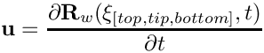
where ![$ \xi_{[top,tip,bottom]} $](form_16.png) are Lagrangian coordinates parametrising the three faces of the flag. The flag performs oscillations with non-dimensional period 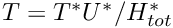. Here is a sketch of the non-dimensional version of the problem:
are Lagrangian coordinates parametrising the three faces of the flag. The flag performs oscillations with non-dimensional period 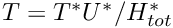. Here is a sketch of the non-dimensional version of the problem:
Results
The figure below shows a snapshot of the flow field
(pressure contours and instantaneous streamlines) for a Reynolds number of  and an oscillation period of 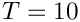, as well as the corresponding fluid mesh. Note how
and an oscillation period of 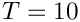, as well as the corresponding fluid mesh. Note how oomph-lib's automatic mesh adaptation has refined the mesh in the high-shear regions near the front of the cylinder and at the trailing edge of the flag.

The corresponding animation illustrates the algebraic node update strategy (implemented with an AlgebraicMesh, discussed in more detail in another tutorial) and the evolution of the flow field. Note that the instantaneous streamlines intersect the (impermeable) flag because the flag is not stationary.
The global parameters
As usual we use a namespace to define the (single) global parameter, the Reynolds number.
Specification of the flag geometry
We specify the flag geometry and its time-dependent motion by representing its three faces by GeomObjects, each parametrised by its own Lagrangian coordinate, as shown in the sketch above. The geometry of the cylinder is represented by one of oomph-lib's generic GeomObjects, the Circle.
We enclose the relevant data in its own namespace and start by defining the period of the oscillation, and the geometric parameters controlling the flag's initial shape and its subsequent motion.
We choose the motion of the flag such that it vaguely resembles that expected in the corresponding FSI problem: We subject the flag's upper and lower faces to purely vertical displacements that deform them into a fraction of a sine wave, while keeping the face at the tip of the flag straight and vertical. We implement this by prescribing the time-dependent motion of the two vertices at the tip of the flag with two functions:
This information is then used in three custom-written GeomObject that define the time-dependent shape of the three faces. Here is the one describing the shape of the upper face:
[We omit the definition of the other two GeomObjects, BottomOfFlag and TipOfFlag in in the interest of brevity. Their definitions can be found in the source code.] We provide storage for the pointers to the four GeomObjects required for the representation of the flag,
and provide a setup function that generates the GeomObjects and stores the pointer to the global Time object that will be created by the Problem:
The mesh
The figure below shows a sketch of the (unrefined) mesh and the enumeration of its boundaries. Various different implementations of the mesh exist, allowing the user to perform the node-update in response to the motion of the flag by a Domain/MacroElement - based procedure, or by using an algebraic node update. In either case, only the nodes in the elements that are shaded in yellow (or refined elements that are generated from these) participate in the node-update.

The node update strategy is illustrated in the animation of the flow field and the mesh motion.
The driver code
The driver code has the usual structure for a time-dependent problem: We store the command line arguments, create a DocInfo object, and assign the parameters that specify the dimensions of the channel.
We build the problem using a mesh in which the node update is performed by the AlgebraicMesh class. (The driver code also provides the option to use a Domain/MacroElement - based node update – this option is chosen via suitable #ifdefs; see the source code for details).
Next we set up the time-stepping (as usual, fewer timesteps are performed during a validation run which is identified by a non-zero number of command line arguments):
We start the simulation with a steady solve, allowing up to three levels of adaptive refinement (fewer if we are performing a validation run):
Finally, we enter the proper timestepping loop, allowing one spatial adaptation per timestep and suppressing the re-assignment of initial conditions following an adaptation by setting the parameter first to false. (See the discussion of timestepping with automatic mesh adaptation in another tutorial.)
The Problem class
The problem class provides an access function to the mesh (note the use of #ifdefs to choose the correct one), and defines the interfaces for the usual member functions, either empty or explained in more detail below.
The problem constructor
The initial assignment of zero velocity and pressure provides a very poor initial guess for the preliminary steady Newton solve. We therefore increase the maximum residuals and iteration counts allowed in the Newton iteration before creating the timestepper and setting up the GeomObjects required to parametrise the flag:
Next we build the mesh, passing the pointers to the various GeomObjects and the geometric parameters to its constructor.
We perform two rounds of uniform refinement (the Newton solver does not converge on coarser meshes) before creating an error estimator for the subsequent automatic mesh adaptation.
Both velocity components are imposed by Dirichlet conditions (either via a no-slip condition or via the imposed inflow profile) on all boundaries, apart from the outflow cross-section (mesh boundary 1), where the axial velocity is unknown.
Next we complete the build of the elements, passing the relevant pointers to physical parameters,
and impose the steady Poiseuille profile at the inlet (mesh boundary 3).
Finally, we pin the redundant pressure degrees of freedom (see another tutorial for details), and assign the equations numbers.
Actions before adapt
After each adaptation, we unpin and re-pin all redundant pressures degrees of freedom (see another tutorial for details). Since the inflow profile is parabolic, it is interpolated correctly from "father" to "son" elements during mesh refinement so no further action is required.
Actions before the timestep
Before each timestep we update the nodal positions in the mesh and re-apply the no-slip condition at the nodes on mesh boundaries 5 - 7.
Post Processing
The function doc_solution(...) documents the results.
Comments and Exercises
- Compare the results obtained when the node update is performed with the algebraic or the
MacroElement/Domain-basednode update. (oomph-lib'sbuild machinery will automatically generate both versions of the code, using the-DUSE_MACRO_ELEMENTScompilation flag).
Acknowledgements
- This code was originally developed by Stefan Kollmannsberger and his students Iason Papaioannou and
Orkun Oezkan Doenmez. It was completed by Floraine Cordier.
Source files for this tutorial
- The source files for this tutorial are located in the directory:
demo_drivers/navier_stokes/turek_flag_non_fsi/
- The driver code is:
demo_drivers/navier_stokes/turek_flag_non_fsi/turek_flag_non_fsi.cc
PDF file
A pdf version of this document is available.